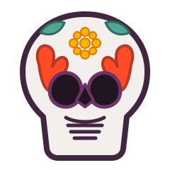

En esperaUna luz que nunca se apaga
Los recuerdos
siempre vuelven
Crea una ofrenda digital para honrar a quienes siguen viviendo en nuestros recuerdos. Comparte sus fotografías y mantén viva su memoria.
Tu homenaje
Enciende una memoria
Comparte tus recuerdos y forma parte de esta ofrenda.
MEMORIA VIVA
Preparando tu ofrenda
Preparando tus fotografías…
0%En espera
En espera
En espera
En espera